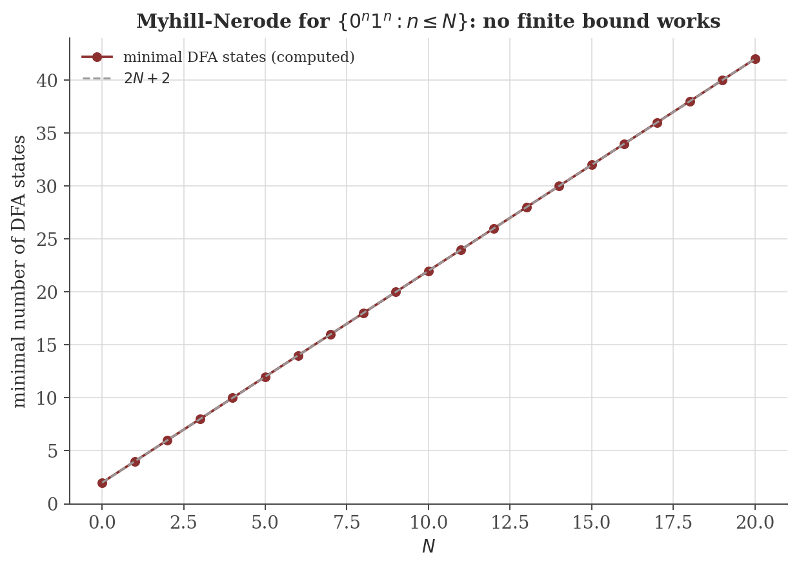
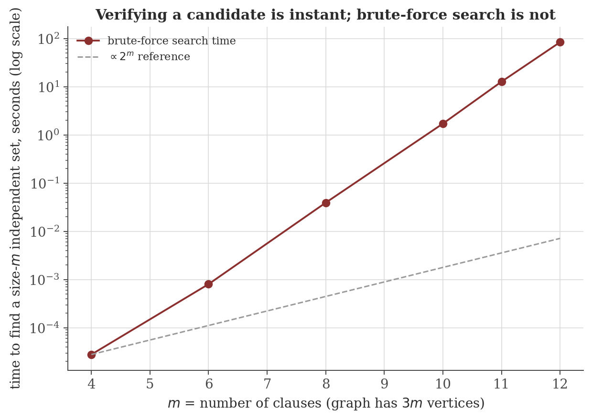

Computability and Formal Languages
Disclaimer: These are my personal notes compiled for my own reference and learning. They may contain errors, incomplete information, or personal interpretations. While I strive for accuracy, these notes are not peer-reviewed and should not be considered authoritative sources. Please consult official textbooks, research papers, or other reliable sources for academic or professional purposes.
Contents
- Finite automata and regular languages
- The Pumping Lemma and Myhill-Nerode
- Context-free languages and the Chomsky hierarchy, briefly
- Turing machines and decidability
- The Halting Problem is undecidable
- Reductions and Rice's theorem
- P, NP, and polynomial-time reductions
- Computation
- Common pitfalls
- Connections
- References
1. Finite automata and regular languages
A deterministic finite automaton (DFA) is $M=(Q,\Sigma,\delta,q_0,F)$: a finite set of states $Q$, alphabet $\Sigma$, transition function $\delta:Q\times\Sigma\to Q$, start state $q_0$, and accepting states $F\subseteq Q$. Extend $\delta$ to strings by $\hat\delta(q,\epsilon)=q$, $\hat\delta(q,wa)=\delta(\hat\delta(q,w),a)$. $M$ recognizes $L(M)=\{w\in\Sigma^*:\hat\delta(q_0,w)\in F\}$; $L$ is regular if some DFA recognizes it.
A DFA is the simplest possible model of computation with a reason to care about it mathematically: it has no memory beyond which of finitely many states it currently occupies. Everything in Section 2 is a consequence of that single restriction, made precise.
2. The Pumping Lemma and Myhill-Nerode
If $L$ is regular, there is $p\geq1$ such that every $s\in L$ with $|s|\geq p$ can be written $s=xyz$ with $|xy|\leq p$, $|y|\geq1$, and $xy^iz\in L$ for every $i\geq0$.
Suppose it were, with pumping length $p$. Take $s=0^p1^p$. Any decomposition $s=xyz$ with $|xy|\leq p$ has $xy$ entirely within the $0$-block, so $y=0^k$, $k\geq1$. Pumping down ($i=0$): $xz=0^{p-k}1^p$ has fewer $0$s than $1$s, so $xz\notin L$ — contradicting the lemma, which requires $xy^0z\in L$ for every valid decomposition. So no such $p$ exists, and $L$ is not regular.
Say $x\sim_Ly$ if for every $z$: $xz\in L\iff yz\in L$. If $L$ is regular, $\sim_L$ has finitely many equivalence classes (at most $|Q|$ for any recognizing DFA).
For $i\neq j$ (say $i<j$), take $z=1^i$: $0^iz=0^i1^i\in L$ but $0^jz=0^j1^i\notin L$ (unequal exponents). So $0^i\not\sim_L0^j$ for all $i\neq j$ — infinitely many pairwise-distinct equivalence classes, so by the theorem's contrapositive, $\{0^n1^n\}$ is not regular. This reaches the same conclusion as the Pumping Lemma by an entirely different route, and it generalizes further: Myhill-Nerode classes are exactly the minimal DFA's states, giving not just non-regularity but an exact minimum state count for any regular approximation (Figure 1).

3. Context-free languages and the Chomsky hierarchy, briefly
Regular languages sit at the bottom of a strict containment hierarchy; each level is generated by grammars with progressively fewer restrictions on production rules, and recognized by progressively more powerful machines.
Regular (right-linear grammars; DFA/NFA) $\subsetneq$ context-free (rules $A\to\gamma$, any $\gamma$; pushdown automata — a DFA plus a stack) $\subsetneq$ context-sensitive (rules $\alpha A\beta\to\alpha\gamma\beta$, $|\gamma|\geq1$; linear-bounded automata) $\subsetneq$ recursively enumerable (unrestricted grammars; Turing machines, Section 4).
$\{0^n1^n:n\geq0\}$, not regular (Section 2), is context-free: the grammar $S\to0S1\mid\epsilon$ generates exactly it, and a pushdown automaton recognizes it by pushing a marker per $0$ and popping one per $1$ — the single unbounded counter a stack provides is exactly the extra power a DFA's fixed state set lacks. Context-free languages have their own pumping lemma (with two pumped pieces instead of one, reflecting the stack's LIFO structure), not reproduced here; $\{a^nb^nc^n:n\geq0\}$ is the standard example of a language that is context-sensitive but not context-free.
4. Turing machines and decidability
A Turing machine is $M=(Q,\Sigma,\Gamma,\delta,q_0,q_{\text{accept}},q_{\text{reject}})$ with an infinite tape, $\delta:Q\times\Gamma\to Q\times\Gamma\times\{L,R\}$ (state and symbol read $\to$ state, symbol to write, head direction). $M$ decides a language $L$ if it halts (in $q_{\text{accept}}$ or $q_{\text{reject}}$) on every input, accepting exactly $L$; $L$ is decidable if some TM decides it, and recognizable if some TM halts-and-accepts on exactly the strings of $L$ (possibly running forever on strings outside $L$).
The Church–Turing thesis — that Turing machines capture exactly the informal, intuitive notion of "algorithm" — is not a theorem to be proved but a claim about the relationship between an informal concept and a formal one; its evidence is that every alternative formalization proposed (lambda calculus, general recursive functions, register machines, real programming languages) has been proved computationally equivalent to Turing machines. It is universally accepted, but it is a thesis, not a theorem, and Section 5's undecidability result is a statement about Turing machines specifically, understood to be a statement about algorithms generally only via this thesis.
5. The Halting Problem is undecidable
$HALT=\{\langle M,w\rangle : M\text{ is a TM that halts on input }w\}$ is undecidable.
This is Cantor's diagonal argument in algorithmic form: $D$ is built specifically to disagree with what $H$ predicts about $D$ itself, the same self-referential trick that proves the reals are uncountable and that no set surjects onto its own power set. The Halting Problem is not "hard" in the sense $\mathrm{P}$ vs. $\mathrm{NP}$ (Section 7) problems are hard — it is not merely intractable, it is impossible for any algorithm whatsoever, with no amount of computation time ever sufficient.
6. Reductions and Rice's theorem
Section 5's proof is not just one undecidability result — it is a template. A reduction from problem $A$ to problem $B$ is an algorithm turning instances of $A$ into instances of $B$ with the same yes/no answer; if $A$ is undecidable and such a reduction exists, $B$ must be undecidable too (a decider for $B$ would give a decider for $A$, via the reduction).
Let $P$ be any property of languages that is non-trivial (true for some recognizable languages, false for others) and depends only on $L(M)$, not on $M$'s description. Then $\{\langle M\rangle:P(L(M))\text{ holds}\}$ is undecidable.
Rice's theorem is a sweeping statement: any question about what a program's behavior actually computes (does it accept some string? does it accept every string? is its language finite? does it compute the same function as some other specific program?) is undecidable, the moment the question is non-trivial. The only decidable questions about a Turing machine are questions about its syntax (how many states does it have, does its code contain a certain substring) — anything about its actual runtime behavior, in general, is not decidable.
7. P, NP, and polynomial-time reductions
$\mathrm P$ = languages decided by some TM in $O(n^k)$ time (some fixed $k$) as a function of input length $n$. $\mathrm{NP}$ = languages with a polynomial-time verifier: $L\in\mathrm{NP}$ if there is a poly-time $V$ and polynomial $q$ with $x\in L\iff\exists\,c,\,|c|\leq q(|x|),\,V(x,c)$ accepts (a "certificate" $c$ that can be checked quickly, even if finding one is hard). $A\leq_pB$ ("$A$ reduces to $B$ in polynomial time") if some poly-time computable $f$ satisfies $x\in A\iff f(x)\in B$. $B$ is NP-hard if every $A\in\mathrm{NP}$ satisfies $A\leq_pB$; $B$ is NP-complete if additionally $B\in\mathrm{NP}$.
$\mathrm P\subseteq\mathrm{NP}$ trivially (a poly-time decider is its own poly-time verifier, ignoring the certificate). Whether $\mathrm P=\mathrm{NP}$ is one of the seven Clay Millennium Prize problems and remains open; nothing below resolves it, but the machinery of NP-completeness is exactly what would let a single resolved instance settle the entire class at once (Section 12 makes this precise).
$\mathrm{3\text{-}SAT}$ — satisfiability of a Boolean formula in conjunctive normal form with exactly three literals per clause — is NP-complete.
(See Sipser, 2013, Thm. 7.37, for the full construction, which simulates an arbitrary poly-time verifier's computation history directly as a Boolean formula.) Given one NP-complete problem, polynomial-time reductions from it certify NP-hardness of anything it reduces to.
$S\subseteq V$ is an independent set in $G=(V,E)$ iff $V\setminus S$ is a vertex cover of $G$; $S$ is a clique in $G$ iff $S$ is an independent set in the complement graph $\bar G$.
Both equivalences are computable in polynomial time (complementing a graph, or just relabeling $S\mapsto V\setminus S$), giving $\text{Independent Set}\leq_p\text{Vertex Cover}\leq_p\text{Clique}\leq_p\text{Independent Set}$ — once one is known NP-hard, all three are.
Given a 3-CNF formula $\phi$ with clauses $C_1,\ldots,C_m$, build $G$: one vertex per literal-occurrence (three per clause), a triangle of edges within each clause's three vertices, and an edge between any two vertices in different clauses representing a variable and its negation. Then $\phi$ is satisfiable iff $G$ has an independent set of size $m$.
Figure 2 runs exactly this reduction on random 3-SAT instances and searches the resulting graph for an independent set by brute force — the reduction is a few lines of code, but the search space it hands to brute force grows explosively (Section 8).

8. Computation
The figures above are generated by computability/generate_figures.py. The snippet below computes the exact Myhill-Nerode state count for $\{0^n1^n:n\leq N\}$ by enumerating reachable prefixes and their residual languages directly from the definition in Section 2 — no automaton library, no minimization algorithm, just the theorem applied literally.
def L_N(N):
return ["0"*k + "1"*k for k in range(N+1)]
def minimal_states(N):
lang = L_N(N)
prefixes = {"0"*j for j in range(N+1)}
prefixes |= {"0"*k + "1"*i for k in range(N+1) for i in range(1, k+1)}
residuals = set()
for w in prefixes:
res = frozenset(s[len(w):] for s in lang if s.startswith(w))
residuals.add(res)
return len(residuals) + 1 # +1 for the single dead/reject class
for N in [0, 5, 10, 15, 20]:
print(N, minimal_states(N))
Actual output:
0 2
5 12
10 22
15 32
20 42Exactly $2N+2$ at every tested $N$, matching Figure 1's full curve — a direct, from-definitions computation of a fact that Section 2's abstract proof establishes only qualitatively (unbounded, not a specific formula).
9. Common pitfalls
The lemma says: for every valid decomposition $s=xyz$ (with $|xy|\leq p$, $|y|\geq1$), pumping stays in $L$. A non-regularity proof must derive a contradiction for every such decomposition, not exhibit one convenient decomposition that happens to fail and ignore others. In Section 2's example, the constraint $|xy|\leq p$ was doing real work: it forced $y$ to lie entirely within the $0$-block, eliminating the need to separately rule out decompositions straddling the $01$ boundary.
Satisfying the pumping property for some $p$ does not prove a language regular — some non-regular languages happen to satisfy it anyway (a well-known example: $\{ww:w\in\{0,1\}^*\}\cup\{0,1\}^*0^k1^k$-style constructions, or more simply languages built to defeat this specific lemma while remaining non-regular). The lemma is only ever used in the contrapositive direction, to disprove regularity, exactly as in Section 2 — never to prove it.
Section 5's proof is a proof, not a report of failed attempts — it shows every possible TM $H$ fails, not that today's best TMs fail. This coexists with the fact that most individual instances of the Halting Problem are easy (a loop with no exit condition obviously never halts); undecidability is a statement about the impossibility of one algorithm handling every instance correctly, not a claim that every instance is individually mysterious.
Section 7 defines NP-hardness as "every NP problem reduces to it" without requiring membership in $\mathrm{NP}$ itself. The Halting Problem (Section 5) is a genuine example of the gap: it is NP-hard (3-SAT reduces to it — given a formula $\phi$, build in polynomial time a TM that brute-force-checks every assignment and halts the moment it finds one satisfying $\phi$, looping forever only if none exists, so this TM halts iff $\phi$ is satisfiable), yet it is not in $\mathrm{NP}$ at all, since it is not even decidable, let alone verifiable in polynomial time. "NP-complete" — the conjunction of NP-hard and in $\mathrm{NP}$ — is the strictly more specific and more commonly intended claim for problems like 3-SAT and Independent Set, and it is not automatic from NP-hardness alone.
10. Connections
- Mathematical logic. 3-SAT (Section 7) is a satisfiability question about propositional logic formulas; the Cook–Levin theorem is precisely the statement that propositional satisfiability checking is, in the worst case, as hard as any polynomial-time-verifiable question whatsoever. That note's resolution refutation system (its Section 5) is the theoretical basis of every practical SAT solver for the problem this note's Section 7 shows is NP-hard.
- Discrete mathematics — graph theory. Independent Set, Vertex Cover, and Clique (Section 7) are graph-theoretic objects; the reduction triangle proved there is a purely graph-theoretic fact (about edges and their complements) doing double duty as a complexity-theoretic one.
- Type theory and functional programming. The Church–Turing thesis (Section 4) is the reason lambda calculus — the foundation of that note's subject — and Turing machines are taken to define the same notion of "computable," despite looking nothing alike; a term normalizing in the (untyped) lambda calculus is exactly as undecidable a question as $HALT$ here, via the same diagonalization idea.
- Distributed systems and concurrency. Several fundamental impossibility results in that note (e.g. limits on what a distributed protocol can guarantee) are proved by the same reduction-and-contradiction strategy as Rice's theorem here — assume a solution exists, use it to solve something already known impossible, contradiction.
11. References
- Sipser, M. (2013). Introduction to the Theory of Computation (3rd ed.). Cengage Learning.
- Hopcroft, J. E., Motwani, R., & Ullman, J. D. (2006). Introduction to Automata Theory, Languages, and Computation (3rd ed.). Pearson.
- Garey, M. R., & Johnson, D. S. (1979). Computers and Intractability: A Guide to the Theory of NP-Completeness. W. H. Freeman.
- Kleinberg, J., & Tardos, É. (2005). Algorithm Design. Addison-Wesley.